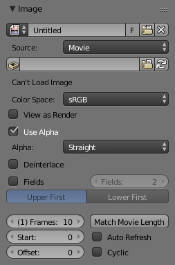

图像设置¶

图像面板。¶
- 图像
数据块菜单。
- 新建
+ 打开 新建图像 菜单会弹出 生成 图像的对话框。
- 新建
源¶
见 支持的图像格式。
单张图像¶
静态图像或单帧。
影片¶
打包到容器的帧。
- 反交错
移除视频文件中的场。比如，如果是一个模拟视频，且包含奇数或偶数的隔行场。
- 帧
- 帧
设置使用的帧范围。
- 起始
序列的全局起始帧，重放的起点。这是全局设置，意味着这会影响所有剪辑用户如影片剪辑编辑器、运动追踪限制和合成节点。
- 偏移量
对影片第一帧进行偏移。在转换场景帧数至视频文件帧数时添加额外的偏移。该选项不影响追踪数据或其他相关数据。
- 匹配影片长度
将图像用户数据块的长度设置为选中视频的长度。
- 自动刷新
在帧变化时自动刷新图像。
- 循环
播放至最后一帧时从头开始并重复，循环播放。


通用选项¶
- 文件
用于替换或打包文件。
- 打包
将资源文件嵌入到当前blend文件。
- 路径
关联文件的路径。
- 打开
打开 文件浏览器 ，从磁盘选择文件。
- 重新载入
重新载入文件。在使用外部应用修改文件后使用。
- 色彩空间
色彩空间。
- XYZ
XYZ空间。
- VD16
从gamma 2.2 sRGB空间转换而来的简单视频色彩空间。
- sRGB
标准RGB显示空间。
- Raw
Raw空间。
- Non-Color
用于包含非色彩数据的图像的色彩空间 (如法线贴图)。
- Linear ACES
ACES线性空间。
- 线性
线性709(全范围)。Blender原生线性空间。
- 预览为渲染结果
在屏幕显示图像时应用 色彩变换。
- 使用多视图
参考 多视图。
- 使用Alpha
决定是否使用图像的alpha通道。
- Alpha模式
-
直接, 预乘